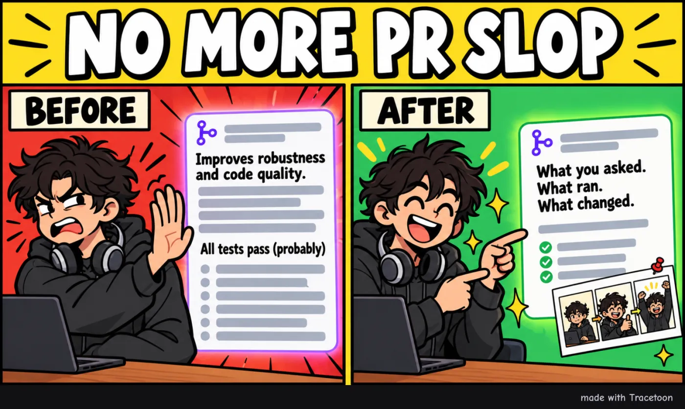
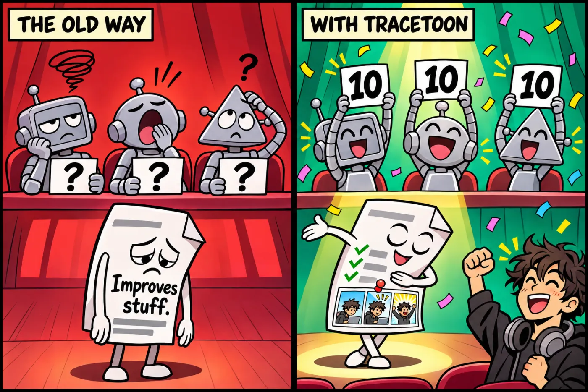
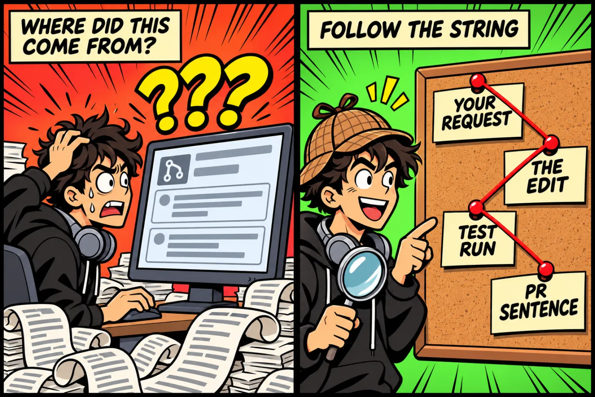
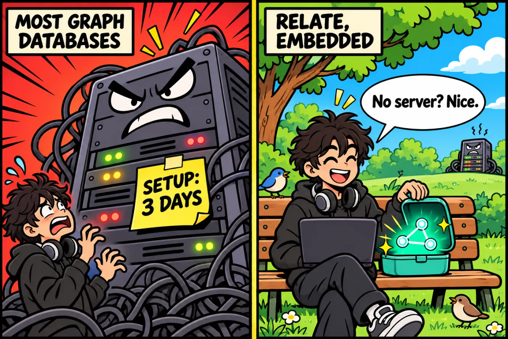
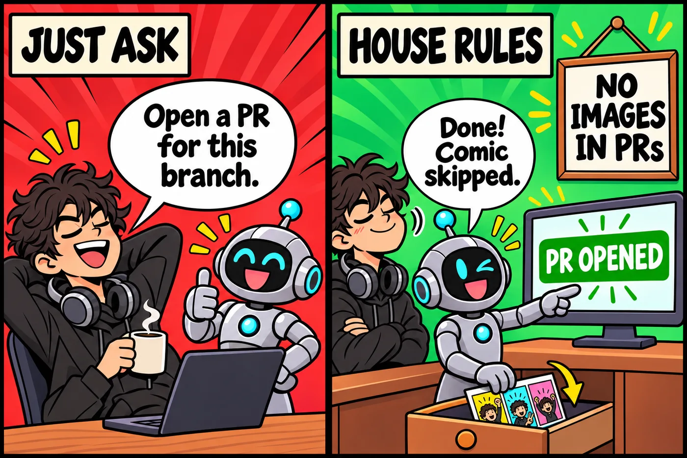
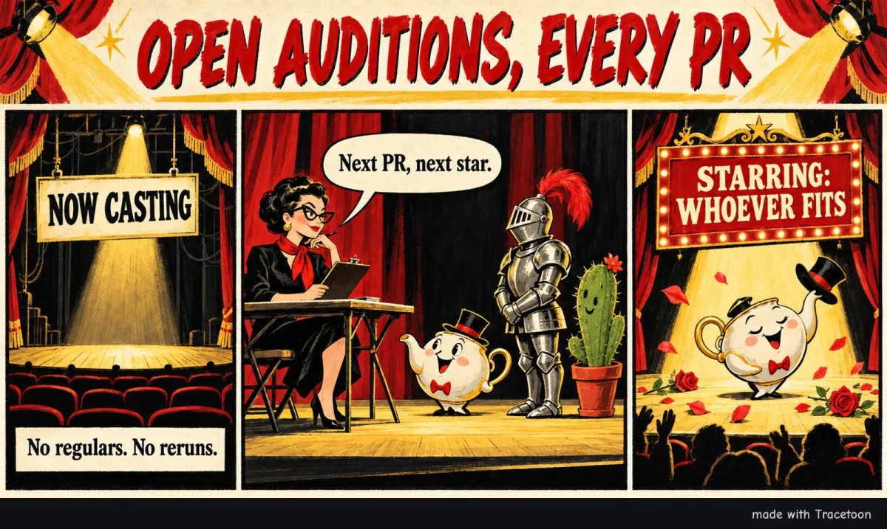

PRs with receipts. And comics.
Your coding agent already kept the receipts: what you asked for, what it changed, what actually ran. Tracetoon turns them into a pull request reviewers can trust. Every claim is checked against the evidence, it costs less to write, and there's a comic on top.
1Install it for every agent on your machine
macOS, Linux, Git Bash
curl -fsSL https://raw.githubusercontent.com/Tracetoon/tracetoon/main/install.sh | shWindows PowerShell
irm https://raw.githubusercontent.com/Tracetoon/tracetoon/main/install.ps1 | iex2Restart your agent. Then, on any branch, ask: “Open a PR for this branch with Tracetoon.”
- Claude Code
- Codex
- Antigravity
- Cursor (planned)
- Windsurf (planned)
- Copilot CLI (planned)


Judged blind. Picked almost every time.
AI-written PRs are usually vague and padded, and they sound sure about tests nobody saw pass. Tracetoon writes from the session logs that Claude Code, Codex and Antigravity already keep. The PR says why the change was made, what changed, and what actually ran.
Here is one real PR, written three ways and scored 0–100 by the same judges:
- Agent writes it alone 47
- Tracetoon, old workflow 65
- Tracetoon + graph 80

Every sentence has a receipt.
Before any model writes a word, Tracetoon builds a small graph of your branch. It links every change in the diff back to the conversation that produced it:
- your request
- agent edit
- hunk in the diff
- commit sentence
- test run
- Credit goes to the right code. The brief names the function that owns each behavior and marks what's new and what only changed. It also flags code where a word like "always" would be wrong.
- Validation comes from receipts. Tracetoon writes the Validation section from the test and build runs on the final code. The model never gets to type "all tests pass."
- The why, not just the what. Plans, decisions and the original request come along with the code, so context coverage rose 5–7 points.

A graph database that fits in your pocket.
The graph runs on Relate, an open-source embedded graph database written in Rust. Tracetoon ships it compiled to WebAssembly inside the CLI, so there's nothing else to install.
- No server, no setup. It runs inside the CLI on Linux, macOS and Windows, works offline, and builds a fresh graph for every PR.
- Real queries, not guesswork. A few lines of Cypher answer questions like "which request led to this code?" and "did a test pass after the last edit?" Relate's BM25 fulltext index links each commit sentence to the code it describes.
- Same evidence in, same brief out. Every fact traces back to a hunk and a session line, so you, or another agent, can audit any sentence.

A sharp brief lets cheap workers check the work.
Without a map, an expensive model rereads your source to check its own claims, two or three times per PR. With the graph, that work is done once, before any model runs. Then:
- One strong writer drafts from a 2–3K-token brief instead of the whole session history, and writes 7K tokens instead of 22K.
- Two cheap reviewers (Haiku or Luna, at extra-high reasoning effort) check a short packet. That costs about 4¢ per PR on Claude and under 1¢ on Codex.
- One edit pass. The reviewers' findings merge into a single list. There are no repeat review rounds and no forked subagents.
- Claude, no graph $0.69
- Claude + graph $0.41
- Codex, no graph $0.32
- Codex + graph $0.21

Just ask for a PR. It knows the house rules.
- Nothing new to learn. Ask your agent for a PR, or let it run
gh pr createas usual. Tracetoon writes the description, has it reviewed and creates the PR. Then it tells you what it did: the link, whether a comic is included, and any sessions it left out. - Your words stay yours. Anything you write in the PR, or edit on GitHub later, is kept on the next update.
- Follows the house rules. Tracetoon reads each repo's AI policies,
AGENTS.md, PR templates and contribution guides, and adds any disclosure the repo asks for. Where a repo's rules forbid images in PRs, the comic is left out automatically. - Private by default. Logs are read on your machine, and private paths and secrets are redacted from the evidence.
- Easy to switch off. Run
tracetoon offto turn it off everywhere or per repo, or setTRACETOON=0for a single command.

And a comic nobody asked for. Everyone reads it.
Each PR can get a one-off comic: a joke about how the work really went, with characters, a format and an art style made up for that PR. It might be a gag strip, a before and after, a movie poster or an instruction manual. Your agent proofreads every word.
- It's drawn with an image route you already have: the Codex CLI with a ChatGPT login, Antigravity, or an OpenAI or Gemini API key.
- It respects the repo. Where contributing rules forbid images in PRs, Tracetoon skips the comic and tells you why.
- It's your choice. Run
tracetoon config set comic offand your PRs have no comic. Set it toalwaysto ignore repo rules.
Your PR says the tests passed. Prove it.
Stephen Chin and Cassandra Chin explain why agent-written PRs need receipts, and how Tracetoon gets them from the session logs.
From session logs to a reviewed PR
- Find the sessionsTracetoon matches agent edits to lines in your diff, and asks you when a session is ambiguous.
- Build the graph
tracetoon prepareturns the logs and git history into a redacted evidence brief, using 0 tokens. - WriteOne strong model drafts 250–400 words and ties each fact to a row of the brief.
- CheckDeterministic checks run first, then two cheap reviewers. One edit pass applies their findings.
- PublishTracetoon creates the PR, adds the comic if the repo allows it, and tells you what it did.
How we measured (and what's not perfect yet)
The numbers come from prbench: 5 real PRs from Tracetoon's own development, each with its original agent session logs, and 5 drafts per PR for each setup. For each PR, a person wrote a fact sheet from the diff and the sessions. AI judges scored every draft against that fact sheet with a 10-item reviewer rubric. Claude runs used Opus 5.5 and Sonnet 5.5 as judges; Codex runs used Sol 6.1 and Terra 6.1. A head-to-head win counts only when both judges, each reading the pair in both orders, pick the same draft. Each comparison uses the same model with the graph and without it. All figures are from the shipped build (round 23).
| Claude · Sonnet 5.5 | Codex · Terra 6.1 | |
|---|---|---|
| Head-to-head (wins–losses) | 18–1, 6 ties | 12–1, 12 ties |
| Composite quality (0–100), graph vs no graph | 78.9 vs 73.7 (+5.2) | 86.6 vs 83.2 (+3.5) |
| Context covered | 0.45 vs 0.38 | 0.44 vs 0.39 |
| Cost per PR | $0.407 vs $0.690 (−41%) | $0.207 vs $0.320 (−35%) |
- Scores vary by about ±3 composite points from run to run. A second Codex run of the same build scored +5.2.
- Not perfect yet: on Claude, the graph drafts flag fewer open questions; on Codex, they're wordier than a very terse baseline.
- The graph doesn't turn a small model into a mid-size one: Haiku as the writer still lost. The win comes from a strong writer plus cheap checkers.
Read the full write-up, with every chart, the case study and the Cypher →
Ship PRs people actually want to read.
It's open source under Apache-2.0, and your logs stay on your machine.
Already installed? To update, ask your agent: “Update Tracetoon.” This works whether you used the installer, the plugin, or just the skill.
macOS, Linux, Git Bash
curl -fsSL https://raw.githubusercontent.com/Tracetoon/tracetoon/main/install.sh | shWindows PowerShell
irm https://raw.githubusercontent.com/Tracetoon/tracetoon/main/install.ps1 | iexThen ask your agent: “Open a PR for this branch with Tracetoon.”